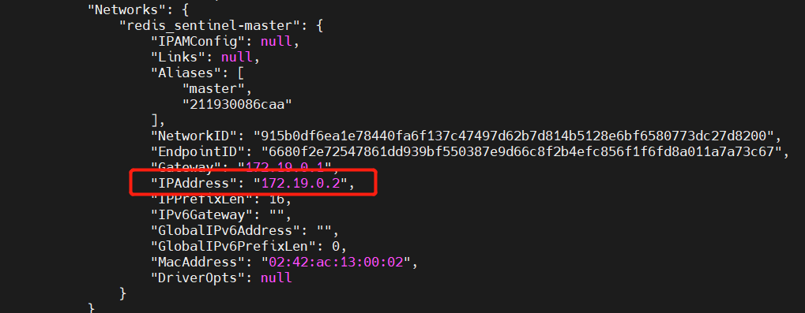
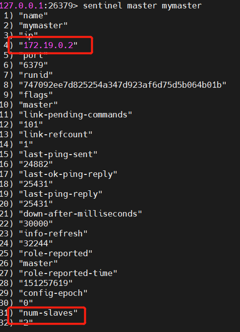
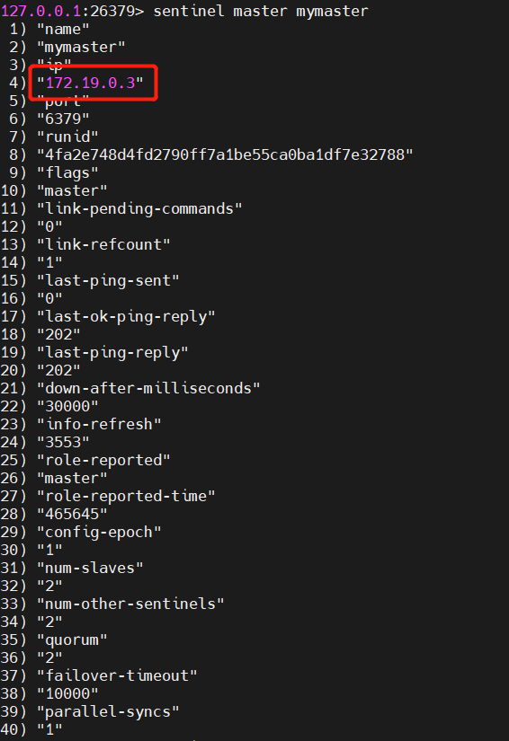

前言
- 由于资源原因，本次搭建使用一台服务器，一个master节点、两个slave节点和三个sentinel节点安装在一起，理论上安装在不同服务器也是没问题的，只是网络设置上的变化，目前是使用docker内部网络。
搭建目标
- 最终是需要将集群搭建在三台不同的机器上，实现高可用
1
2
3
4
5
6
7
8
9
10
11+----+
| M1 |
| S1 |
+----+
|
+----+ | +----+
| R2 |----+----| R3 |
| S2 | | S3 |
+----+ +----+
Configuration: quorum = 2
素材列表
- 系统环境：centos 7.4
- 镜像版本：redis
- 前题：安装docker，docker-compose,熟悉docker及docker-compose命令
docker-compose启动主从节点
redis哨兵模式有点类似于mongodb的仲裁节点，但是哨兵的节点是游离在主从节点之外的，redis集群本身只有主从概念
多服务器时，把docker-compose各个节点拆散启动即可，理论上使用默认网络模式
1
2
3
4
5
6
7
8
9
10
11
12
13
14
15
16
17
18
19
20
21
22
23
24
25
26
27
28
29
30
31
32version: '2'
services:
master:
image: redis
container_name: redis-master
command: redis-server --requirepass 123456
ports:
- "6379:6379"
networks:
- sentinel-master
slave1:
image: redis
container_name: redis-slave-1
ports:
- "6380:6379"
command: redis-server --slaveof redis-master 6379 --requirepass 123456 --masterauth 123456
depends_on:
- master
networks:
- sentinel-master
slave2:
image: redis
container_name: redis-slave-2
ports:
- "6381:6379"
command: redis-server --slaveof redis-master 6379 --requirepass 123456 --masterauth 123456
depends_on:
- master
networks:
- sentinel-master
networks:
sentinel-master:启动一主两从
1
docker-compose up -d
验证启动是否成功
1
docker ps
查看master节点内部网络ip，理论上多服务器时则是主机IP即可，可省略此步
1
docker inspect 容器id

docker-compose启动哨兵节点
哨兵节点同样是三个，最终多服务器搭建时，是1对1的模式
创建哨兵配置文件模板,此处 172.19.0.2是docker inspect查询处的master节点内部ip，多节点部署时，应填写主机对应ip和端口
1
2
3
4
5
6
7port 26379 //端口
sentinel monitor mymaster 172.19.0.2 6379 2 //表示Redis监控一个叫做mymaster的运行在172.19.0.2:6379的master，投票达到2则表示master以及挂掉了。
sentinel auth-pass mymaster 123456 //设置主节点的密码,与docker-compose.yml里配置一致
sentinel down-after-milliseconds mymaster 30000 //表示在一段时间范围内sentinel向master发送的心跳PING没有回复则认为master不可用了
sentinel parallel-syncs mymaster 1 //表示设置在故障转移之后，同时可以重新配置使用新master的slave的数量。数字越低，更多的时间将会用故障转移完成，但是如果slaves配置为服务旧数据，你可能不希望所有的slave同时重新同步master。因为主从复制对于slave是非阻塞的，当停止从master加载批量数据时有一个片刻延迟。通过设置选项为1，确信每次只有一个slave是不可到达的。
sentinel failover-timeout mymaster 10000 //表示10秒内mymaster还没活过来，则认为master宕机了
sentinel deny-scripts-reconfig yes以上面的配置文件作为模板复制三份相同的配置文件
1
2
3cp sentinel.conf sentinel1.conf
cp sentinel.conf sentinel2.conf
cp sentinel.conf sentinel3.confdocker-compose.yml哨兵节点
多服务器时，把docker-compose各个节点拆散启动即可，理论上使用默认网络模式
1
2
3
4
5
6
7
8
9
10
11
12
13
14
15
16
17
18
19
20
21
22
23
24
25
26
27
28
29
30version: '2'
services:
sentinel1:
image: redis
container_name: redis-sentinel-1
ports:
- "26379:26379"
command: redis-sentinel /usr/local/etc/redis/sentinel.conf
volumes:
- "./sentinel1.conf:/usr/local/etc/redis/sentinel.conf"
sentinel2:
image: redis
container_name: redis-sentinel-2
ports:
- "26380:26379"
command: redis-sentinel /usr/local/etc/redis/sentinel.conf
volumes:
- "./sentinel2.conf:/usr/local/etc/redis/sentinel.conf"
sentinel3:
image: redis
container_name: redis-sentinel-3
ports:
- "26381:26379"
command: redis-sentinel /usr/local/etc/redis/sentinel.conf
volumes:
- ./sentinel3.conf:/usr/local/etc/redis/sentinel.conf
networks:
default:
external:
name: redis_sentinel-master查看哨兵节点是否启动及对master主节点的监控
1
2
3
4docker ps //查看哨兵的容器id
docker exec -it 哨兵容器id /bin/bash //进入哨兵容器
redis-cli -p 26379 //进入redis命令行
sentinel master mymaster //查看主节点信息
测试故障转移
另开一个linux连接，前一个保持在master容器内部的redis命令行状态
1
2docker ps //获取master容器id
docker stop 容器id //停止master容器master容器内部的redis命令行状态
1
sentinel master mymaster //发现ip已经切换到slave节点

小结
- 美中不足是没有在多服务器上实际测试，很多只是按经验推测，之后会尽快完成多服务器的搭建并更新文档。
参考：redis官方
参考：docker-compose 搭建高可用Redis 主从、哨兵集群
参考：多服务器使用Docker设置一主一从三哨兵redis（完整）